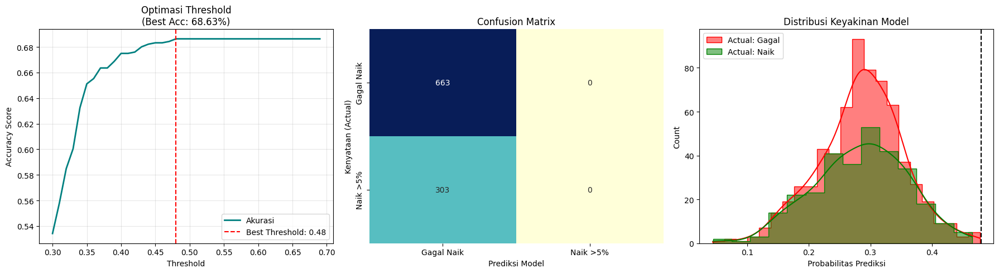

Project UAS Data Timeseries#
Data Understanding#
Dataset ini untuk memprediksi apakah harga saham akan mengalami kenaikan yang luar biasa setelah pengumuman laba per saham (EPS) kuartalan, berdasarkan pergerakan harga saham tersebut selama 60 hari sebelumnya? Data ini diformat oleh Vlad Pazenuks sebagai bagian dari proyek tahun ketiganya. Data harga harian perusahaan-perusahaan NASDAQ 100 diekstraksi dari dataset Kaggle. Tanggal pengumuman perusahaan-perusahaan tersebut diperoleh dari NASDAQ.com. Setiap data merupakan persentase perubahan harga penutupan dibandingkan dengan hari sebelumnya. Setiap kasus merupakan rangkaian data selama 60 hari. Kelas target didefinisikan sebagai 0 = harga tidak naik lebih dari 5 persen setelah pengumuman laporan perusahaan 1 = harga naik lebih dari 5 persen setelah pengumuman laporan perusahaan. Terdapat 1.931 kasus, 1.326 kasus kelas 0, dan 605 kasus kelas 1.
permasalahan#
Disini Kita memiliki permasalahan imbalanced data, yaitu karena data kelas 0(harga tidak naik >5%) 3x lipat lebih banyak di bandingkan kelas 1(harga naik <5%)
penjelasan data#
-Rumus Dasar $\( \text{Nilai Data} = \left( \frac{\text{Harga Hari Ini} - \text{Harga Kemarin}} {\text{Harga Kemarin}} \right) \times 100 \)$
Misal kita punya harga saham seperti berikut:
Harga Kemarin (H-61): $125.50
Harga Hari Ini (H-60): $120.29
Hitung perubahan harga dengan rumus:
Hitung selisih harga $\( 120.29 - 125.50 = -5.21 \text{ (Turun \$5.21)} \)$
Bagi dengan harga kemarin $\( \frac{-5.21}{125.50} = -0.0415139\ldots \)$
Ubah ke persen $\( -0.0415139\ldots \times 100 = \mathbf{-4.15139\ldots\%} \)$
Setiap baris data mewakili data perusahaan yang berbeda
import pandas as pd
import numpy as np
import matplotlib.pyplot as plt
import seaborn as sns
from scipy.io import arff
from sklearn.neural_network import MLPClassifier
from sklearn.preprocessing import StandardScaler
from sklearn.metrics import classification_report, confusion_matrix, accuracy_score
import joblib
1. LOAD DATA#
# 1. DEFINISI FUNGSI LOAD
def load_arff_data(filename):
data, meta = arff.loadarff(filename)
df = pd.DataFrame(data)
# Decode kolom class dari bytes ke integer
df['class'] = df['class'].str.decode('utf-8').astype(int)
return df
# 2. PROSES LOAD DATA
print("Loading Data...")
train_df = load_arff_data('SharePriceIncrease_TRAIN.arff')
test_df = load_arff_data('SharePriceIncrease_TEST.arff')
# 3. MENAMPILKAN OUTPUT DATA (MODIFIKASI DI SINI)
print("\n" + "="*50)
print("1. PREVIEW DATA TRAINING (5 Baris Pertama)")
print("="*50)
# Menampilkan 5 baris pertama
print(train_df.head())
print("\n" + "="*50)
print("2. INFORMASI STRUKTUR DATA")
print("="*50)
# Menampilkan jumlah baris, kolom, dan tipe data
print(f"Total Baris Training : {train_df.shape[0]}")
print(f"Total Kolom Training: {train_df.shape[1]}")
print(f"Total Baris Test : {test_df.shape[0]}")
print("\n" + "="*50)
print("3. CEK DISTRIBUSI KELAS (TARGET)")
print("="*50)
# Penting untuk melihat ketimpangan data (Imbalance)
print("Distribusi Kelas di Data Training:")
print(train_df['class'].value_counts())
print("\nPersentase Kelas (%):")
print(train_df['class'].value_counts(normalize=True) * 100)
Loading Data...
==================================================
1. PREVIEW DATA TRAINING (5 Baris Pertama)
==================================================
t-60 t-59 t-58 t-57 t-56 t-55 t-54 \
0 -4.145376 -0.770141 2.009947 -2.692152 2.044909 -0.432222 0.138121
1 -0.749063 0.943391 -0.186911 0.374531 -0.932839 0.564976 2.996252
2 4.929173 1.062923 0.773694 -0.263917 0.300698 0.095937 -0.317479
3 1.152666 -0.037992 0.975306 -0.614649 -0.189324 -1.036924 0.306667
4 3.084022 -0.659606 0.166003 1.692709 -2.188342 0.226113 0.047496
t-53 t-52 t-51 ... t-9 t-8 t-7 t-6 \
0 -0.729062 1.508532 2.737586 ... -0.489701 0.033939 -0.899071 1.078400
1 -2.727274 0.560752 0.371747 ... 2.376602 0.892861 0.530969 0.880285
2 0.661012 0.364158 -0.047586 ... -0.367583 0.250349 0.348294 0.294693
3 -1.579615 -1.320223 -0.118043 ... 1.718497 1.501737 -1.334207 -2.155577
4 1.139330 -1.290775 1.806938 ... 1.466408 1.207933 0.181166 -0.244658
t-5 t-4 t-3 t-2 t-1 class
0 -0.321759 -0.305811 0.579414 0.643851 0.875415 0
1 0.698080 3.639515 0.000000 -0.501676 2.689081 0
2 -0.404829 -0.878513 -0.489454 -0.691255 -1.285053 0
3 1.683081 -1.695592 -1.327859 -1.082129 3.043476 0
4 0.234593 0.744678 -1.077082 -1.056787 0.075520 0
[5 rows x 61 columns]
==================================================
2. INFORMASI STRUKTUR DATA
==================================================
Total Baris Training : 965
Total Kolom Training: 61
Total Baris Test : 966
==================================================
3. CEK DISTRIBUSI KELAS (TARGET)
==================================================
Distribusi Kelas di Data Training:
class
0 663
1 302
Name: count, dtype: int64
Persentase Kelas (%):
class
0 68.704663
1 31.295337
Name: proportion, dtype: float64
2. PEMBERSIHAN DATA (MISSING VALUE & OUTLIER)#
Outlier Clipping (Winsorization): Membatasi nilai ekstrem (persentil 1% & 99%) agar lonjakan harga anomali tidak merusak bobot Neural Network.
Missing Value Handling: Menghapus baris yang tidak lengkap untuk menjamin integritas data.
def clean_data(df, name="Dataset"):
print(f"\n=== Analisis & Pembersihan: {name} ===")
# --- A. Cek Missing Value ---
total_nan = df.isnull().sum().sum()
rows_with_nan = df.isnull().any(axis=1).sum()
if total_nan > 0:
print(f"⚠️ Missing Value: Ditemukan {total_nan} nilai kosong di {rows_with_nan} baris.")
df = df.dropna()
print(f"✅ Tindakan: {rows_with_nan} baris telah dihapus.")
else:
print(f"✅ Missing Value: Tidak ditemukan nilai kosong.")
# --- B. Cek & Penanganan Outlier ---
cols_features = df.columns[:-1]
total_outliers = 0
# Kita hitung outlier sebelum dilakukan clipping
for col in cols_features:
lower_limit = df[col].quantile(0.01)
upper_limit = df[col].quantile(0.99)
# Hitung jumlah nilai yang di luar batas
outliers = ((df[col] < lower_limit) | (df[col] > upper_limit)).sum()
total_outliers += outliers
# Lakukan Clipping (Winsorization)
df[col] = df[col].clip(lower_limit, upper_limit)
if total_outliers > 0:
print(f"⚠️ Outlier: Ditemukan {total_outliers} nilai di luar rentang persentil 1% - 99%.")
print(f"✅ Tindakan: Nilai ekstrim telah di-clipping (disesuaikan ke batas aman).")
else:
print(f"✅ Outlier: Tidak ditemukan nilai ekstrim.")
return df
# Cara penggunaan:
train_df = clean_data(train_df, name="Training Set")
test_df = clean_data(test_df, name="Test Set")
=== Analisis & Pembersihan: Training Set ===
✅ Missing Value: Tidak ditemukan nilai kosong.
⚠️ Outlier: Ditemukan 1200 nilai di luar rentang persentil 1% - 99%.
✅ Tindakan: Nilai ekstrim telah di-clipping (disesuaikan ke batas aman).
=== Analisis & Pembersihan: Test Set ===
✅ Missing Value: Tidak ditemukan nilai kosong.
⚠️ Outlier: Ditemukan 1200 nilai di luar rentang persentil 1% - 99%.
✅ Tindakan: Nilai ekstrim telah di-clipping (disesuaikan ke batas aman).
3. SMOOTHING & FEATURE ENGINEERING#
Smoothing (Moving Average): Mengurangi fluktuasi harian yang acak untuk menonjolkan tren harga jangka pendek.
def preprocess_and_extract(df, window_size=3, name="Data"):
print(f"\n--- Memulai Smoothing & Ekstraksi Fitur: {name} ---")
# Pisahkan fitur dan target
raw_features = df.drop('class', axis=1)
target = df['class']
# 1. Proses Smoothing (Simple Moving Average)
print(f"🔄 Menggunakan Simple Moving Average (Window Size: {window_size})...")
smoothed_features = raw_features.rolling(window=window_size, axis=1).mean()
# 2. Penanganan nilai kosong akibat rolling window
nan_count = smoothed_features.isna().sum().sum()
print(f"💡 Menangani {nan_count} nilai awal yang kosong (NaN) dengan data asli...")
smoothed_features = smoothed_features.fillna(raw_features)
# 3. Ekstraksi Fitur dari data yang sudah di-smooth
print(f"📊 Menghitung fitur statistik (Mean, Std, Momentum, dll)...")
df_eng = smoothed_features.copy()
df_eng['mean'] = smoothed_features.mean(axis=1)
df_eng['std'] = smoothed_features.std(axis=1)
df_eng['min'] = smoothed_features.min(axis=1)
df_eng['max'] = smoothed_features.max(axis=1)
# Mengambil kolom terakhir (t-1) dan kolom t-5 untuk momentum
df_eng['short_momentum'] = smoothed_features.iloc[:, 59] - smoothed_features.iloc[:, 55]
df_eng['short_volatility'] = smoothed_features.iloc[:, 55:60].std(axis=1)
print(f"✅ Selesai: {df_eng.shape[1]} fitur telah siap.")
return df_eng, target
# Cara pemanggilan dengan menyertakan nama dataset
X_train, y_train = preprocess_and_extract(train_df, name="Training Set")
X_test, y_test = preprocess_and_extract(test_df, name="Test Set")
--- Memulai Smoothing & Ekstraksi Fitur: Training Set ---
🔄 Menggunakan Simple Moving Average (Window Size: 3)...
💡 Menangani 1930 nilai awal yang kosong (NaN) dengan data asli...
📊 Menghitung fitur statistik (Mean, Std, Momentum, dll)...
✅ Selesai: 66 fitur telah siap.
--- Memulai Smoothing & Ekstraksi Fitur: Test Set ---
🔄 Menggunakan Simple Moving Average (Window Size: 3)...
C:\Users\nabil\AppData\Local\Temp\ipykernel_17856\3591021325.py:10: FutureWarning: Support for axis=1 in DataFrame.rolling is deprecated and will be removed in a future version. Use obj.T.rolling(...) instead
smoothed_features = raw_features.rolling(window=window_size, axis=1).mean()
C:\Users\nabil\AppData\Local\Temp\ipykernel_17856\3591021325.py:10: FutureWarning: Support for axis=1 in DataFrame.rolling is deprecated and will be removed in a future version. Use obj.T.rolling(...) instead
smoothed_features = raw_features.rolling(window=window_size, axis=1).mean()
💡 Menangani 1932 nilai awal yang kosong (NaN) dengan data asli...
📊 Menghitung fitur statistik (Mean, Std, Momentum, dll)...
✅ Selesai: 66 fitur telah siap.
4. PREPROCESSING (SCALING)#
Agar semua input memiliki skala yang seragam (rata-rata \(0\) dan standar deviasi \(1\)). Hal ini wajib dilakukan pada model Neural Network (MLP) agar proses pembaruan bobot (weight updates) selama pelatihan menjadi lebih seimbang dan mencegah fitur dengan rentang nilai besar mendominasi proses pembelajaran.”
scaler = StandardScaler()
X_train_scaled = scaler.fit_transform(X_train)
X_test_scaled = scaler.transform(X_test)
5. MODELING (MLP)#
Alasan memilih MLP
Non-Linearity: Pergerakan saham tidak linear. MLP mampu menangkap hubungan kompleks antar hari (misal: pengaruh hari ke-10 terhadap hari ke-60) yang sering dilewatkan oleh model linear biasa.
Feature Synergies: MLP bekerja sangat baik setelah data di-scaling dan diekstrak fiturnya (Mean, Std, Momentum), memungkinkan syaraf buatan menemukan pola “bentuk” grafik secara otomatis.
print("\nMelatih MLP dengan data yang sudah dibersihkan...")
mlp_model = MLPClassifier(
hidden_layer_sizes=(128, 64, 32),
activation='relu',
solver='adam',
alpha=0.005, # Regularisasi ditingkatkan untuk menangani sisa noise
batch_size='auto',
learning_rate='adaptive',
max_iter=1000,
random_state=42,
early_stopping=True
)
mlp_model.fit(X_train_scaled, y_train)
Melatih MLP dengan data yang sudah dibersihkan...
MLPClassifier(alpha=0.005, early_stopping=True,
hidden_layer_sizes=(128, 64, 32), learning_rate='adaptive',
max_iter=1000, random_state=42)In a Jupyter environment, please rerun this cell to show the HTML representation or trust the notebook. On GitHub, the HTML representation is unable to render, please try loading this page with nbviewer.org.
MLPClassifier(alpha=0.005, early_stopping=True,
hidden_layer_sizes=(128, 64, 32), learning_rate='adaptive',
max_iter=1000, random_state=42)# ==========================================
# 6. EVALUASI & VISUALISASI LANJUTAN
# ==========================================
y_probs = mlp_model.predict_proba(X_test_scaled)[:, 1]
# 1. Optimasi Threshold (Mencari titik akurasi tertinggi)
thresholds = np.arange(0.3, 0.7, 0.01)
accuracies = []
for thresh in thresholds:
preds = (y_probs >= thresh).astype(int)
accuracies.append(accuracy_score(y_test, preds))
best_acc = max(accuracies)
best_thresh = thresholds[np.argmax(accuracies)]
final_preds = (y_probs >= best_thresh).astype(int)
# --- START VISUALISASI ---
plt.figure(figsize=(18, 5))
# Plot A: Kurva Optimasi Threshold
# (Menjelaskan ke dosen bagaimana Anda memilih angka threshold tersebut)
plt.subplot(1, 3, 1)
plt.plot(thresholds, accuracies, color='teal', linewidth=2, label='Akurasi')
plt.axvline(best_thresh, color='red', linestyle='--', label=f'Best Threshold: {best_thresh:.2f}')
plt.title(f"Optimasi Threshold\n(Best Acc: {best_acc*100:.2f}%)")
plt.xlabel("Threshold")
plt.ylabel("Accuracy Score")
plt.legend()
plt.grid(alpha=0.3)
# Plot B: Confusion Matrix yang Lebih Cantik
# (Menunjukkan detail True Positive, False Positive, dll)
plt.subplot(1, 3, 2)
cm = confusion_matrix(y_test, final_preds)
sns.heatmap(cm, annot=True, fmt='d', cmap='YlGnBu', cbar=False,
xticklabels=['Gagal Naik', 'Naik >5%'],
yticklabels=['Gagal Naik', 'Naik >5%'])
plt.title("Confusion Matrix")
plt.xlabel("Prediksi Model")
plt.ylabel("Kenyataan (Actual)")
# Plot C: Distribusi Probabilitas Prediksi
# (Menunjukkan seberapa yakin model dalam menebak)
plt.subplot(1, 3, 3)
sns.histplot(y_probs[y_test == 0], color="red", label="Actual: Gagal", kde=True, element="step")
sns.histplot(y_probs[y_test == 1], color="green", label="Actual: Naik", kde=True, element="step")
plt.axvline(best_thresh, color='black', linestyle='--')
plt.title("Distribusi Keyakinan Model")
plt.xlabel("Probabilitas Prediksi")
plt.legend()
plt.tight_layout()
plt.show()
# Output Terminal
print(f"\n=== RINGKASAN PERFORMA ===")
print(f"Akurasi Tertinggi : {best_acc*100:.2f}%")
print(f"Threshold Terpilih : {best_thresh:.2f}")
print("\nLaporan Klasifikasi Detail:")
print(classification_report(y_test, final_preds, target_names=['Gagal Naik', 'Naik >5%']))
# Menyimpan Model MLP
joblib.dump(mlp_model, 'stock_model_mlp.pkl')
# Menyimpan Scaler (Wajib karena app.py butuh scaler yang sama)
joblib.dump(scaler, 'scaler_mlp.pkl')

=== RINGKASAN PERFORMA ===
Akurasi Tertinggi : 68.63%
Threshold Terpilih : 0.48
Laporan Klasifikasi Detail:
precision recall f1-score support
Gagal Naik 0.69 1.00 0.81 663
Naik >5% 0.00 0.00 0.00 303
accuracy 0.69 966
macro avg 0.34 0.50 0.41 966
weighted avg 0.47 0.69 0.56 966
C:\Users\nabil\AppData\Local\Programs\Python\Python312\Lib\site-packages\sklearn\metrics\_classification.py:1565: UndefinedMetricWarning: Precision is ill-defined and being set to 0.0 in labels with no predicted samples. Use `zero_division` parameter to control this behavior.
_warn_prf(average, modifier, f"{metric.capitalize()} is", len(result))
C:\Users\nabil\AppData\Local\Programs\Python\Python312\Lib\site-packages\sklearn\metrics\_classification.py:1565: UndefinedMetricWarning: Precision is ill-defined and being set to 0.0 in labels with no predicted samples. Use `zero_division` parameter to control this behavior.
_warn_prf(average, modifier, f"{metric.capitalize()} is", len(result))
C:\Users\nabil\AppData\Local\Programs\Python\Python312\Lib\site-packages\sklearn\metrics\_classification.py:1565: UndefinedMetricWarning: Precision is ill-defined and being set to 0.0 in labels with no predicted samples. Use `zero_division` parameter to control this behavior.
_warn_prf(average, modifier, f"{metric.capitalize()} is", len(result))
['scaler_mlp.pkl']